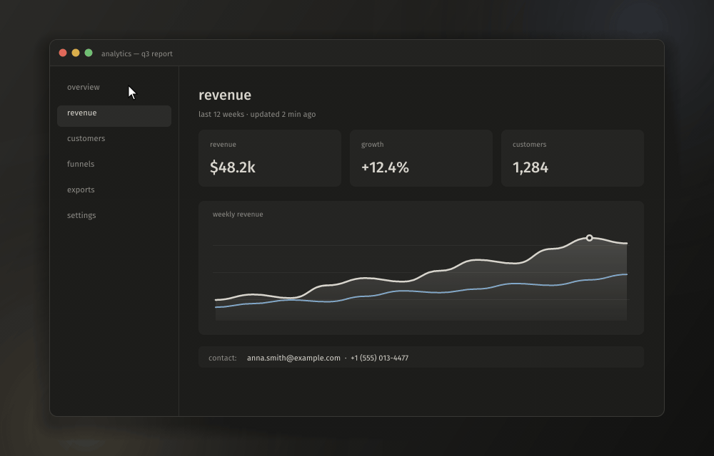
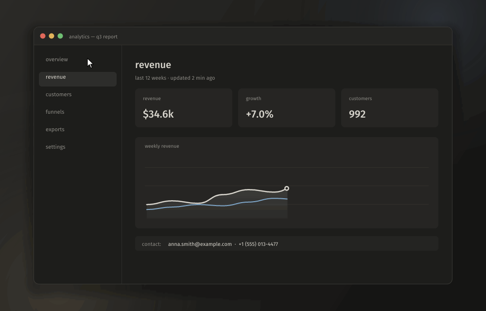

Скриншоты и запись экрана за пару нажатий
Быстрая и тихая программа для macOS и Windows. Снимай, размечай и отправляй, не открывая лишних окон. Живёт в строке меню или трее и не мешает.

выделил область → стрелка → номера шагов → размыл почту → скопировал
Что умеет
Всё, что нужно, чтобы показать экран: от быстрого снимка до видео с кликами.
Снимок области
Экран замирает, лупа показывает пиксели и цвет. Клик по окну снимает только его.
Разметка до снимка
Стрелки, номера шагов, маркер, текст, размытие и заливка прямо на выделении.
Действие одной клавишей
Скопировать, сохранить, закрепить поверх окон, «красивый снимок» или ссылка на свой сервер.
Запись экрана
Область, окно или монитор в MP4 на аппаратном кодировщике. Звук системы и микрофон на отдельных дорожках.
Повтор и GIF
Последние минуты экрана всегда готовы к сохранению. Лёгкие GIF встроенным кодировщиком.
Редакторы
Правка снимков и обрезка видео: громкость дорожек, MP4 для мессенджеров или GIF.

выделил область в режиме записи → запись с таймером → стоп: видео сохранено
Запуск на маке
blinker не подписан платным сертификатом Apple, поэтому при первом запуске macOS его придержит. Это нормально и занимает пару минут, один раз.
Скачай и перенеси в «Программы»
Скачай Blinker.dmg и открой его. Перетащи Blinker на ярлык Программы в том же окне.
Открой и нажми «Готово»
При первом запуске macOS скажет, что не может проверить программу. Нажми Готово, не «Переместить в корзину».
Разреши запуск
Открой Системные настройки → Конфиденциальность и безопасность, пролистай вниз до строки про Blinker и нажми Всё равно открыть. Подтверди паролем или Touch ID.
Или одной командой в Терминале, вместо этого шага:
xattr -dr com.apple.quarantine /Applications/Blinker.appДай доступ к экрану
В строке меню появится значок ✦, а blinker попросит доступ к записи экрана: рядом с запросом будет подсказка. Нажми Открыть Системные настройки и включи Blinker в списке Запись экрана и системного звука.
Перезапусти blinker
Разрешение начинает действовать после перезапуска: нажми на значок ✦ → выход и открой Blinker снова.
Готово
⇧⌘2 — область, ⇧⌘1 — весь экран, ⇧⌘7 — запись. Автозапуск включается в настройках, раздел «система».
Микрофон (нужна macOS 15) и мониторинг ввода (чтобы показывать сочетания клавиш в видео) blinker попросит сам, когда они впервые понадобятся. Обновляется он тоже сам: когда выходит новая версия, в настройках появляется кнопка «обновить blinker», и разрешения сохраняются.
Если что-то не так
macOS пишет, что Blinker повреждён
Так macOS называет скачанные программы без подписи Apple. Выполни в Терминале команду и открой Blinker снова:
xattr -dr com.apple.quarantine /Applications/Blinker.appРазрешение включено, а доступа к экрану нет
Значит, macOS запомнила разрешение для другой сборки Blinker. Выйди из blinker, сбрось разрешение командой ниже, открой Blinker и включи доступ ещё раз:
tccutil reset ScreenCapture app.blinkerСочетание клавиш не срабатывает
Его заняла другая программа. Открой настройки blinker → горячие клавиши: занятые сочетания подсвечены красным, задай другое.
Нет значка в строке меню
На маке с чёлкой значки могут прятаться за ней, если их много. Освободи место или включи Blinker в Системные настройки → Строка меню.
Запуск на Windows
Один файл, ставить ничего не нужно.
Три шага
- Скачай blinker.exe и запусти.
- Если SmartScreen предупредит о неподписанной программе: Подробнее → Выполнить в любом случае.
- Откроются настройки, а blinker останется в трее. PrtSc — снимок области.
PrtSc открывает «Ножницы»?
Выключи Параметры → Специальные возможности → Клавиатура → Использовать клавишу Print Screen для запуска функции создания фрагмента экрана.
Горячие клавиши
Все глобальные сочетания меняются в настройках. В выделении и редакторах на маке вместо Ctrl работает ⌘.
| действие | macOS | Windows |
|---|---|---|
| снимок области | ⇧⌘2 | PrtSc |
| весь экран | ⇧⌘1 | Ctrl+PrtSc |
| повторить область | ⌥⇧⌘2 | Shift+PrtSc |
| запись экрана (ещё раз — стоп) | ⇧⌘7 | Ctrl+Shift+PrtSc |
| пауза записи | ⌃⌥P | Ctrl+Alt+P |
| сохранить повтор | ⌥⇧⌘7 | Ctrl+Alt+PrtSc |